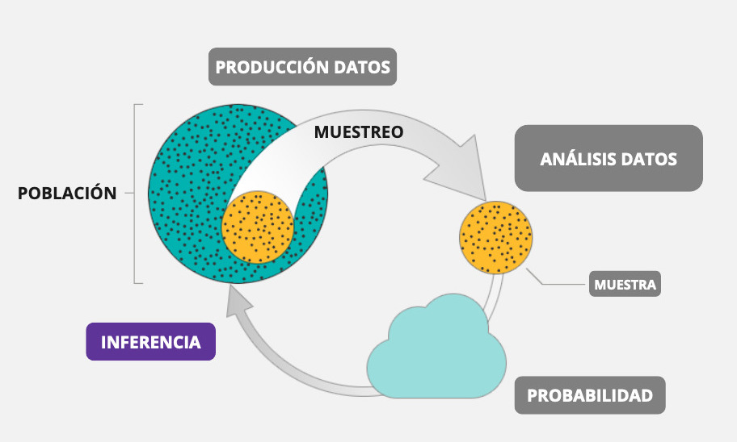
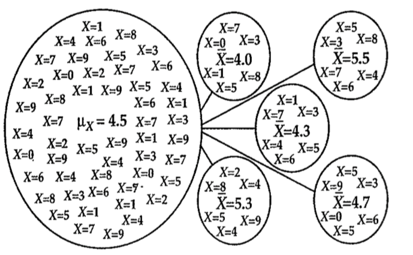

Completar hasta as 11:59 PM del viernes, 6 de octubre de 2023
Objetivo de la práctica
El objetivo de esta guía práctica es continuar profundizando en la inferencia estadística, revisando algunos de sus conceptos clave como distribución muestral, error estándar, y la definición y aplicaciones de los intervalos de confianza.
En detalle, aprenderemos:
Qué es una distribución muestral.
Qué es el error estándar.
Qué son y cómo calcular intervalos de conafianza.
Primero recordemos:
¿Qué es la inferencia estadística?
La inferencia estadística es el proceso de realizar conclusiones o predicciones sobre una población a partir de una muestra o subconjunto representativo de esa población. En concreto, llamamos inferencia al ejercicio de extrapolar determinados valores de una muestra, llamados estadísticos, para estimar un parámetro de la población.

Un concepto central en todo esto es la probabilidad de error, es decir, en qué medida nos estamos equivocando (o estamos dispuestos a estar equivocados) al tratar de extrapolar una estimación muestral a la población.
¿Qué es una distribución?
Recordemos que por distribución nos referimos al conjunto de todos los valores posibles de una variable y las frecuencias (o probabilidades) con las que se producen.
Existen distribuciones empíricas y distribuciones teóricas, en donde:
las primeras reflejan la distribución de los valores que asume la variable en un grupo concreto a partir de una observación.
las segundas son una función matématica que expresan la distribución de un conjunto de números mediante su probabilidad de ocurencia.
Distribución muestral
Nota
Variabilidad muestral: el valor de un estadístico varía en un muestreo aleatorio repetido.
La distribución muestral es la distribución de las estimaciones, o estadísticos como la media o proporción, tomadas de múltiples muestras aleatorias de una población. Permite comprender cómo varían las estimaciones de una muestra a otra.
Ejemplo 1: Imaginemos que tenemos una población de niñ_s de 0 a 9 años, y tomamos múltiples muestras de 6 individu_s (n=6). Cada una de las muestras tendrá un promedio (estadístico muestral, en este caso \(\bar{x}\)) diferente, que no necesariamente coincidirn con el promedio de la población (parámetro, en este caso \(\mu_{x}\))

Ejemplo 2: Si usamos valores simulados, podemos ver que todas las medias obtenidas en cada muesta son distintas.
set.seed(100) # Establecer semilla muestras <-replicate(100, mean(rnorm(30, mean =50, sd =10))) # 100 muestras de tamaño 30muestras
Como se vio en la sesión 6, si tengo la desviación estándar de los promedios, puedo construir un intervalo de probabilidad, basado en la curva normal (mirar sesión 5).
Nota
Una característica importante es que se asume que las muestras tomadas de la población son aleatorias y representativas, lo que es esencial para que la distribución muestral refleje adecuadamente la variabilidad de las estimaciones.
La importancia de la distribución muestral es que nos permitirá estimar parámetros poblacionales a partir de estadísticos muestrales, construir intervalos de confianza, y realizar pruebas de hipótesis.
Error estándar
Luego, lo mismo para cada una de las muestras verde, lila, naranja y negra.
Lo que tendremos es que cada promedio de cada muestra es un valor que podemos promediar, y tienen su propia desviación estándar a su propio promedio. Luego, a esa desviación estándar de los promedios de cada muestra al promedio general, la llamaremos error estándar.
Nota
Teorema del límite central la distribución de los promedios de distintas muestras - o distribución muestral del promedio - se aproxima a una distribución normal.
Basados en el teorema del límite central, es posible calcular la desviación estándar del promedio (error estándar) con una sola muestra:
# Generar una muestra de datosset.seed(123) # Establecer semilla muestra <-rnorm(100, mean =50, sd =10) # Muestra de tamaño 100, media 50, desviación estándar 10# Calcular el error estándarerror_estandar <-sd(muestra) /sqrt(length(muestra))error_estandar
[1] 0.9128159
La importancia del error estándar es que nos permitirá construir intervalos de confianza, y realizar pruebas de hipótesis.
Intervalos de confianza
Un intervalo de confianza es un rango dentro del cual es probable que se encuentre un parámetro poblacional con un nivel de confianza específico. Además, proporciona información sobre la precisión de nuestras estimaciones.
Por ejemplo,
# Calcular un intervalo de confianza para la mediaintervalo_confianza <-t.test(muestra)$conf.int # Intervalo de confianza del 95% para la mediaintervalo_confianza
Nivel de confianza: Corresponde a la probabilidad de que la muestra elegida produzca un intervalo que incluya el parámetro que se está estimando (\(1-\alpha\)).
Nivel de significacncia: Corresponde a la probabilidad de que el intervalo calculado a partir de la muestra no comprenda el parámetro de la población (\(\alpha\)).
Cálculo de intervalos de confianza
Ahora ¡Manos a la obra!
Calculemos intervalos de confianza. Primero, carguemos las librerías necesarias:
library(pacman)pacman::p_load(tidyverse, # colección de paquetes para manipulación de datos car, # para recodificar psych, # para analizar datos sjmisc, # para analizar datos srvyr, # para estimación de IC y ponderadores Publish) # para ICoptions(scipen =999) # para desactivar notacion cientificarm(list =ls()) # para limpiar el entorno de trabajo
Recordemos que podemos contar con bases de datos que tengan factor de expansión (ponderador) o no. Esta distinción se presenta cuando trabajamos con muestras simples o complejas. Al trabajar con muestras complejas debemos identificar cuál es la variable del ponderador e incorporarla en nuestro cálculo, como veremos a continuación.
Intervalos de confianza sin ponderador
Podemos calcular intervalos de confianza con muestras representativas sin ponderadores o factores de expansión. Supongamos que es el caso.
IC para Medias
Calculemos un intervalo de confianza para la media de ingresos de personas ocupadas:
psych::describe(esi$ing_t_p)
vars n mean sd median trimmed mad min max
X1 1 37124 586360.4 697362.9 405347.7 474473.1 255411.6 0 38206253
range skew kurtosis se
X1 38206253 12 402.32 3619.36
Publish::ci.mean(esi$ing_t_p, alpha =0.05)
mean CI-95%
586360.41 [579266.37;593454.45]
Al no aplicar factores de expansión, contamos con una media de ingresos de $586.360 como estimación puntual. Pero también podemos decir que con un 95% de confianza el parámetro poblacional se encontrará entre $579.266 y $593.454.
IC para Proporciones
Para calcular un intervalo de confianza para la proporción por la variable sexo, usamos:
sjmisc::frq(esi$sexo)
x <numeric>
# total N=37124 valid N=37124 mean=1.44 sd=0.50
Value | N | Raw % | Valid % | Cum. %
----------------------------------------
1 | 20806 | 56.04 | 56.04 | 56.04
2 | 16318 | 43.96 | 43.96 | 100.00
<NA> | 0 | 0.00 | <NA> | <NA>
prop.test(x =20806, n =37124, conf.level =0.95)
1-sample proportions test with continuity correction
data: 20806 out of 37124, null probability 0.5
X-squared = 542.32, df = 1, p-value < 0.00000000000000022
alternative hypothesis: true p is not equal to 0.5
95 percent confidence interval:
0.5553777 0.5655019
sample estimates:
p
0.5604461
En este caso, sabemos que el total de las personas ocupadas de la muestra son n=37.124, y que la cantidad de hombres son 20.806, correspondientes al 56% como estimación puntual. También podemos sostener con un 95% que la proporción de hombres en la población se encuentra entre 55.54% y 56.6%.
Intervalos de confianza con ponderador
Para muestras complejas que cuentan con ponderador (o factor de expansión) también podemos hacer este ejercicio.
Primero, es necesario identificar la variable de factor de expansión o ponderador:
esi_pond <- esi %>%as_survey_design(ids =1, # indica conglomerados de muestreo; ~0 o ~1 cuando no haystrata = estrato, # indica efecto de diseño muestralweights = fact_cal_esi) # indica el ponderadoroptions(survey.lonely.psu ="certainty") # seteamos para que ids no moleste
IC para Medias
Ahora, teniendo en consideración el factor de expansión, podemos señalar que:
# A tibble: 1 × 3
media media_low media_upp
<dbl> <dbl> <dbl>
1 681039. 666563. 695516.
El promedio de ingresos de personas ocupadas ponderado en la población corresponde a $681.039 como estimación puntual, pero que es posible afirmar con un 95% de confianza que el parámetro poblacional se encuentra entre $666.562 y $695.516.
IC para Proporciones
Finalmente, si calculamos la proporción de hombres ocupados en la población considerando el factor de expansión:
sjmisc::frq(esi$sexo)
x <numeric>
# total N=37124 valid N=37124 mean=1.44 sd=0.50
Value | N | Raw % | Valid % | Cum. %
----------------------------------------
1 | 20806 | 56.04 | 56.04 | 56.04
2 | 16318 | 43.96 | 43.96 | 100.00
<NA> | 0 | 0.00 | <NA> | <NA>
Tenemos que, con un 95% de conafianza, podemos afirmar que la proporción de hombre ocupados se encuentra entre el 57% y 58%.
Resumen
En esta guía práctica pudimos repasar los conceptos de inferencia estadística y distribución. Y con ello, abordamos las ideas de distribución muestral, error estándar, y la definición y cálculo de intervalos de confianza, tanto para muestras simples como complejas.